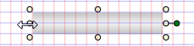
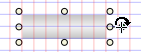
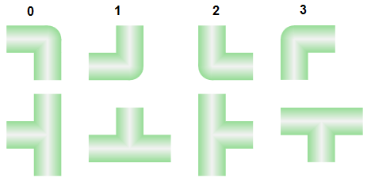

Drawing a Ventilation Duct
When drawing ventilation ducts, clarify first if they need to be gray or colored. Changing from gray to color or vice versus after the fact requires a new configuration.
- A graphics page is open.
- Click View > Library.
- The Library Browser opens.
- In the Mode group, click Test
 .
. - Select the Library.
- In the Filter text box, enter the following filter criterion: *2D*duct.
- The 2D ventilation ducts are gray and colored, and display in the Library Browser.
- Select the gray or colored duct symbol, the angle, or T-piece and drag it to the graphics page.
Repositioning a Straight Duct Piece
- Select the duct symbol using the cursor.
- Drag-and-drop the duct symbol to the desired X/Y position. The anchors are no longer visible after positioning.
- The duct symbol is repositioned.
Extending the Straight Duct Symbol
- Select the duct symbol using the cursor.
- Position the mouse pointer over the left or right marking until the pointer's form changes

. - Left-click and hold and then drag the duct symbol to the desired length. The anchors are no longer visible if the size is changed.
- Release the left button once the duct symbol has the desired length.
- The length of the duct symbol changes.
Rotate a Straight Duct Symbol
- Select the duct symbol using the cursor.
- Position the mouse pointer over the green highlighting until the pointer's form changes

. - Left-click and hold to rotate the duct symbol to the desired angle.
- Release the left button as soon as you have reached the desired angle. The anchors are no longer visible after positioning.
- The duct symbol is at the desired angle.

NOTE:
The angle of the desired symbol can be entered at the following location: Symbol Instance Properties > Layout > Angle.
Rotating an Angle or T-Piece
- In the Mode group, click Test .
- First click an angle or T-piece symbol, and right-click until the desired direction is displayed.

NOTE:
The angle of the desired symbol can be entered at the following location: Symbol Instance Properties > Layout > Angle.